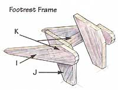

Spend blissful days in an easy-to-build chair.
Even if you haven't spent some of the most blissfully restful hours of your life in an Adirondack-style lawn chair, you've certainly seen them in ads, movies, or magazine articles about the elegant Lake Champlain estates where they evolved in the Gay '90s, (1890s, that is). Adirondacks are those great wide, wood-plank chairs with old-time charm and spreading arms that beckon you in ...but with a seat that is so wickedly comfortable and deep that you just may "...need a #@$*& spring in your seat to get out.. .," as my woodworking grandfather used to grouse when hauling free of a lawn chair (that he'd made two generations earlier) ... himself being well into his 80s then.
Their great, broad arms are perfectly horizontal so they can hold a cold drink, a small library of summer reading, and a big lunch all at once ... but this makes their arms so deviously high above the depths of the seat that your elbows are forced up ... so you don't have the leverage to do anything more strenuous than a crossword puzzle. Add in the warmth of the summer sun, lap of waves or crash of surf, maybe another of those cold drinks ... and an Adirondack chair can do marvelously destructive things to your ambition.
You can purchase pale copies of the true Adirondack chair, power-stapled together from cheap 1" (actually ¾"-thick) pine shelving in mall stores and unfinished furniture outlets for $35, or $150+ chairs constructed from domestic hardwoods, or $200+ chairs of redwood or plantation teak from mail-order catalogs.
For the most part though, commercial designs are "downsized" from the expansive original to be lightweight enough to ship by UPS. They lack the strength to stand up to decades of serious use or to the weather-beating that any outdoor furniture must endure.
Here's how to build your own amplesized, rock-solid Adirondack chair, plus a foot rest that makes the chair a lounger or can be made as a side table. Or you can build a double chair that can serve as a settee or be hung on chains as a porch swing. The design and construction is classic and will last for generations if you drag it onto the porch or put the legs on blocks and cover it with an old tarp during winter.
MOTHER'S chair frame is based on nature's most stable form-the triangle. Like a kangaroo, a child's trike, or a geodesic dome. Two triangles are backed together in a lazy "N" for the frame. Hardly anything can break it except time and poor maintenance.
You can use any wood you have at hand, though the plan assumes an industrial-strength frame built of inexpensive construction-grade 2-by building lumber and the rest from nominal 1" (actually ¾"-thick) pine. Most fasteners are self-tightening galvanized or (better, but more costly) stainless-steel drywall-type power-driven screws. The front legs and back support are held to the back leg-seat support with galvanized carriage bolts.
IMPORTANT: The difference between a satisfying project and one that looks shoddy is the squareness of cuts and alignment of joints. Pick the best #1 grade lumber you can find-without twists or bows. Cut carefully and perfectly square.
However, unless you use seasoned hardwoods and dress all sides plumb and square, many joints won't mate tightly. You can cheat. Get some 2-part epoxy. Mix enough to fill in the fault that makes your joint cranky. Smear it in the fault zone. Fasten as tightly as you can without creating the kink ...and let the epoxy correct the problem. Just don't use it till you are ready for the final fastening. It won't let go once set up.
Most building plans assume you are an experienced cabinetmaker with a shop full of professional woodcraft tools that can joint and mill and surface-plane and rout and dado and miter and scarf and all that good-sounding pro-woodworker stuff. We assume that you (like us) are an average woodbutcher with a few power hand tools who doesn't know a dado from a kerf unless you look it up in one of those beautifully photographed woodworking books you never consult. We also assume you're working with wood that can vary as much as a ½" in any dimension. (That is, a 2x4 is a 2x4 in name only-its nominal size. A mill run can range from 1 5/8 to 1 7/16 in thickness and just as much in width. Size varies between boards as well.) So these directions assume you are eyeballing most of your joints, spacings, lengths, and cutting angles, and you will use common sense and Will's illustrations rather than a fixed set of micron-accurate directions. Making an Adirondack chair is closer to fence building than cabinet-making.
Ease, Sand, and Prefinish: Round edges of arms, seat, and back slats. Also sand all parts before assembly. Use a piece of sandpaper stapled to a block of wood to sand edges sharply-and move it in a straight line; don't rock it at the ends of each stroke. In the process you'll get to know each piece and be able to smooth off those irregular surfaces that make for sloppy joints and out-of-plumb alignment. For a painted finish, apply a good deck preservative over all surfaces and prime before assembly. For an oiled finish, apply all but the final coat of finish before assembly. This will get preservatives onto surfaces that are hidden under joints.
Fastening. Pilot drill and countersink all screw holes. Always fasten from thinner wood into thicker wood. Fasten 2-by to 2by with 2½" screws. Fasten 1" boards to 2x4s with 2" screws-where possible screwing from both sides of the joint, or using three screws in a triangle pattern for strength. Fasten 1" to 1" boards with 1" well-countersunk screws.
For strongest joints into (relatively weak-holding) end-grain of cross-braces you can: insert screws at an angle to cut ends. Or drill a pair of ½" wide, 1" long holes side-by-side and 1" apart in each cut end; glue in 1"-long hardwood dowels; pilot-drill holes and insert screws. Or score sides of legs where end grain will butt, attach with screws and liberal coats of epoxy glue.
Plug Holes: If you have a drill press, use your plug-cutter to make plugs from a scrap piece of wood. Otherwise, buy plugs to fit your countersink. Once the fastener is in and snug, fill each countersunk screw hole with 2-part epoxy and tap in a plug.
With a sharp knife or wood chisel, shave top of plug even with surface, wipe off excess glue, and sand smooth when dry.
In building the chair, measure parts and cutting angles following the Cutting Guide and make arms and lower legs using the patterns.
1. Using the pattern, cut two rear-leg/seat-supports from 2x4x6 boards.
2. From the Cutting Diagram, cut two front legs and two back supports from 2x4s.
3. Place one front leg atop one rear leg so it fits into dotted lines on pattern. Line them up so bottom edges of both are on a line-as they will set flat on the ground. Fasten with three screws (in a triangle) inserted from the inside out (from front leg into rear leg). Don't drill and fasten with carriage bolt yet.
4. Fasten back support to rear leg so it too fits into lines on pattern. Use three self-tapping screws. No bolt yet.
5. Make another side frame that is a mirror image of the first ...but just tack in place ...don't tighten screws.
6. Hold the two side frames against one another. Remove wood screws and adjust board alignment in second-built as needed so all leg bottoms rest flat on the floor and corresponding parts on both frames are identically aligned. Now tighten all screws.
7. Drill a 7/16" hole through the middle of all four joints. Insert and tighten a 3/8” x 3 5/8” galvanized carriage bolt with large flat washers behind nut.
8. While you can easily lay the side frames flat, cut out attach the triangular front arm supports to the top outer side of each front leg. Be sure top of the triangular support and square-cut top of leg form a flat horizontal surface for the arm to rest on. Attach with epoxy cement and two horizontal screws from leg into support and a third up-angling screw from support into leg
9. Similarly, cut from scrap 2x4s the two cleats that attach to the inner top edges of the vertical back supports. Be sure the lower edges of the cleats are perpendicular to the long edges of the back supports. Fasten with two screws from leg to cleat and a third from cleat into leg.
1. Following the Cutting Guide, cut one front leg to front leg cross-brace and two back cross-braces from 2x4s.
2. Block up side frames as they will stand-leg bottoms flat and horizontal members square and plumb (that is, seatslat length apart, sides perpendicular to the ground and opposing members parallel to one another).
3. Tack-fasten (insert one screw, not cinched tight) the upper back brace to the back supports so it is snug up against bottom of cleats.
4. Tack-fasten bottom back brace so it is snugged down against top edges of backleg/seat boards.
5. Tack-fasten the front cross-brace to front legs so it is snug up against lower edges of the back-leg/seat-support boards.
6. Loosen all tack-screws and reset framework as necessary so legs are all flat to the floor, and the frame is square, plumb, and level in all dimensions. Loosen screws if necessary and insert thin, wood shims into joints to square misaligned joints.
7. Fasten permanently.
1. Select a backrest pattern from the examples (or design your own).
2. Cut back slats to size using Cutting Guide.
3. Tack a piece of straight wood as a temporary seat slat across back legs, a good 2" out from back supports (so you can mark on it to align back slats).
4. Mark center-points on temporary seat slat and both back crossbraces, then align the centerline of your center back slat with them. Fasten (two screws if 6" wide, one screw if narrower).
5. Arrange remaining slats and fasten. (If you prefer a fan-shaped back with a top that spans out to the sides, it is easiest to cut a narrow triangle from the outer sides of both outer slats. Or, if you have time, you can divide the excess upper-over-lower span between boards and shave lower edges of each.)
1. Cut your seat slats. They can be any narrow-width stock along the flat of the seat, though nominal 2" boards are specified. Leave equal and ample slots between boards for water drainage. Over the curved lip in front, use 1x1 boards to form a smooth curve. For a closer fit, you can cut these boards with angled sides (in a truncated triangle) or shave a 1/4" sliver off the lower edges of each board.
2. Lay slats atop seat supports. Measure carefully so slats will be evenly spaced.
3. Fasten narrow boards in front with thin (#4) 1½"-long brass screws. Cut counter sinks carefully in this narrow stock. If it splits, replace marred boards and then fasten with 1½" galvanized finished nails.
4. Fasten 2" and wider boards with single 1½" conventional #8 galvanized drywall-type screws.
5. And finally, attach the arms with two screws side-by-side front and back. For best fit and longest-lived joints, bed the arms in epoxy cement pressed well into the end-grain of the end-grain of the verticals and supporting cleats.
6. Plug all holes. Sand and finish to your liking.
1. Cut four legs per the Cutting Guide.
2. A footrest takes a lot of abuse and must be fastened especially well. With four carriage bolts or triangles of 2½" screws from each side, fasten front legs to back legs so forward-upper angle-points of both boards form a straight line and leg bottoms are flat to the ground. They should be mirror images.
3. Block up leg assemblies so they are parallel and square to one another, and fasten the 2x4 back-brace using one of the end-grain-fastening methods described above.
4. Fasten slats as illustrated and described under chair seat assembly.
Note the heavy 2x4 braces between bottom ends of the 2x4 legs. These give the table enough bottom weight so it will not blow over in a high wind like most of the outdoor-furniture tables we've encountered. But you may find its appearance loutish and unattractive. If so, then saw, plane, or sand a wedge off the ends of both bottom cross braces. They will disappear. "Easing," or slightly rounding, exposed edges of the legs will also soften the rugged appearance.
1. Cut out the four legs (same length of chair's front leg) and the two bottom cross-braces from 2x4s, and cut the curved-end top cross braces from a 1x4.
2. Making leg assemblies as mirror images, fasten lower braces 1½ " up from leg bottoms and top braces with upper edges even with tops of legs. Be sure boards are square (90°) to one another before fastening.
3. Block up leg assemblies, find centers of upper and lower braces, and attach the middle slats of the top and the lower shelf. Use epoxy to fill joints if tightening screws tends to pull legs out of plumb square or flat.
4. Fasten remaining slats as you did in attaching seat slats.
Chair is a standard size large. To reduce seat width to fit your anatomy or the space available, reduce all horizontal parts by 1" to 3" and adjust back slats as needed. Reduce the length of the two back-leg/seat support boards as much as you reduce width to equalize proportions. But don't make the fit too tight. Reduce height by trimming leg bottoms, then reduce length of back slats by the amount you reduce legs to retain a balanced look. Reduce outer dimension/overhang of the arms if they look too big for the chair.
You can enlarge the chair as well; just reverse the process described above. Lengthen legs for tall folks. Widen horizontals for wider bodies. If you need to increase dimensions by 3" or more for a really major person, make a third "N" frame, but trim front leg off to be even with top of back-leg seat support and insert it in the center. Double the upper back cross-brace as well. For greatest strength, use two thicknesses of ¾" plywood for both crosspieces that hold the back slats.
The traditional Adirondack has a flat back and flat seat. It is more comfortable if some degree of curve is imparted to the seat-especially where knees bend over the front. You need a bandsaw to cut really comfy curves into 2-by lumber. We have compromised and cut several angles in the front of the seat to ease that front edge.
The more elegant Adirondack chair designs are built with a dish to the seat and the back as well, but that requires cutting compound curves into seat and back supports, which is more trouble than it's worth. Weakens them too. MOTHER prefers to bind 6-foot long 1/8”-cord tie-ties into the horizontal seams of a pair of Dacron sailcloth cushions stuffed with that quick-drying poly-something-or another stuffing she uses to make Teddy Bears for her grandchildren. The top ties of the back cushion are looped through a pair of eyehooks in the top rear of the back slats. The front of the seat cushion is pulled over the front rim and the ties are fastened to the front legs under the seat. The remaining ties are looped around the back legs. The cushions dry fast enough that they never get taken off the chairs till fall.
Staining construction-grade softwood lumber isn't a good idea except for furniture that will stay under cover-on the porch, say. Traditionally, Adirondack chairs were painted dark green. More recently, white seems in favor.
For lawn furniture that will live outdoors (if you haven't pre-treated/primed as recommended above) saturate the wood in a good fungicide-containing, penetrating deck preservative and let dry in the sun for a week. Then sand, prime with an oil-base primer and paint with a hard, high-gloss oil enamel. Oil base is still the most reliable finish for outdoor furniture.
Lawn furniture tends to get dragged through the grass, abrading paint around the leg bottoms that are in constant ground contact and prone to pick up molds, rots, and boring insects. Using PT lumber for legs is the best long-term solution. The best non-chemical preventative we've heard of is to set the legs in shallow containers filled with rock salt and covered against rain with more foil. Used aluminum-foil cake pans are one idea for good leg-bath containers. What better fate for the reside of a fresh piece of cherry pie.
1. This is fun. Make three "N"s as above, but for the center one, cut two lower-leg/seat supports from 1"-thick lumber. Sandwich the front leg and rear back support between them.
2. Trim top of front leg board even with top of rear leg boards.
3. Block up the "Ns" with center leg assembly in the middle; measure and tack in place double upper and lower back-supporting cross-braces. Adjust width as you like; the middle "N" allows a really wide settee if you want.
4. Measure and tack on front leg braces behind front legs.
5. Make and fasten seat slats and two side arms as above.
6. You may want to fill the space between thin-stock middle legs with a length of 2x4 and fasten.
You'll want a good-sized, level, rugged work surface. A picnic table, 8-foot-long planks on sawhorses or a porch floor are fine.
A pencil and carpenter's try-square are needed to mark 90° cuts and assure that parts are square and perpendicular to the work surface for assembly.
You need a saw that will cut 2-bys. A crosscut handsaw will do; an electric-powered bandsaw or hand-held jigsaw is better (and will let you make more elegant curved cuts). A7+" circular saw makes straight cuts easier still. If you have a tilting-arbor power saw, you can rip boards lengthwise and not have to use standard-width lumber, and you can cut seat slats at miter angles for an elegantly fine fit.
An electric drill is needed along with several 3/32" pilot-drill bits (they break easily) and a 3/8" countersink so you can bury fasteners and make wooden plugs to seal the holes. If you have a drill press, a 3/8" plug cutter to match your countersink will let you make your own plugs. A small container of one of the new exterior/weatherproof yellow wood glues is good to bind the plugs in for outdoor use. "Gorilla" glue is better. Best is 2-part epoxy.
A power-driver is nearly essential for the tight joints that any hard-used furniture needs-the more powerful the better. These are expensive, but will serve around the place for decades. A driver (cord less is handier) should be part of every handy homeowners tool kit, not an extravagance.
You will need a supply of stainless steel or thickly-galvanized #8-sized standard drywall screws in 1",1½", 2", and 2½" lengths. If you are new to power-driving, you may as well get a box of each length. It is dimensionally cheaper in the long run than buying small lots. And once you get used to power-fastening, you will run through them faster than you could have imagined. The power-driver and screws are nearly as crucial to maintenance around a country place as duct tape.
To fasten 2x4 legs, you will need four 3/8"-wide and 3 5/8"-long galvanized carriage bolts with nuts, and four large 3/8" washers, one to fit behind each nut and each bolt head. To fasten 2x4 legs to each chair, you will need four 3/8" x 3 5/8"-long galvanized carriage bolts with nuts and four large 3/8" washers-one to fit behind each nut. The foot rest requires eight carriage bolts.
To drill the bolt holes you will need a 4" long, 7/16” drill bit.
Long pipe-type woodworking clamps are good to have but not essential. Optional as well is a router or shaper to round or "ease" edges of boards ...though a block plane and wood rasp, an electric orbital sander or sanding block, and sheets of coarse, medium and fine sandpaper, plus a little elbow grease will do the job as well.
Finishing sandpaper, brushes, solvents, and finishes complete the tool kit.
|
WILL SHELTON Spend blissful days in an easy-to-build Adirondack chair. |
WILL SHELTON Sideframes for the Adirondack chair. |
WILL SHELTON Framework for the Adirondack chair. |
|
WILL SHELTON Templates for the Adirondack chair. |
WILL SHELTON Add a backrest to the Adirondack chair. |
WILL SHELTON There can choose from several options for the Adirondack chair backrest. |
|
WILL SHELTON Templates for the footrest legs. |
WILL SHELTON There can choose from several options for the Adirondack chair backrest. |
WILL SHELTON Assemble the footrest frame. |
|
 WILL SHELTON The finished footrest. |
WILL SHELTON For a more finished look, add wood plugs to cover the screw holes. |
WILL SHELTON Carriage bolts make secure joints. |
|
WILL SHELTON The table includes a lower shelf for books, snacks or anything you might need for an afternoon relaxing in an Adirondack chair. |
|
|
|
|
|
|